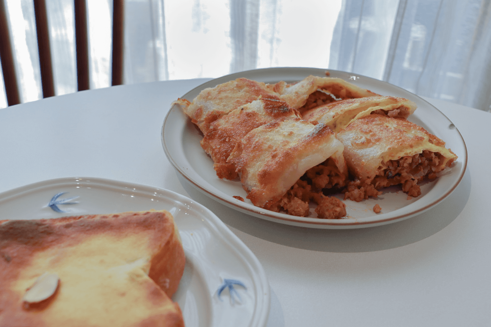
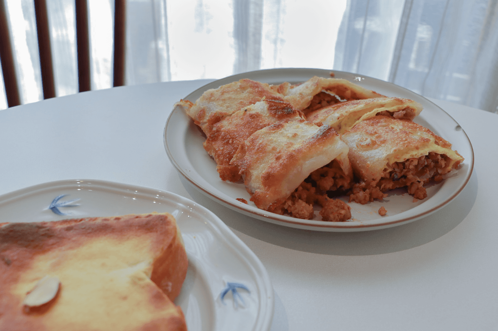

回歸本質，才能將我們的價值呈現給顧客
04 Oct， 2024 / 文、攝: 張馨云
▴ 鄰近阿里山森林鐵路車庫園區的鼻孔先生手作早午餐
原先從事醫護行業的Gini,因為醫院所舉辦的減脂比賽,開始健身,學著自己備餐、研究食譜到下廚,慢慢的
培養出做料理的樂趣,與一直有著創業想法的仁宏討論,最後相互結合,用餐車開啟兩人的創業之路。
「鼻孔先生,好特別的店名」是我在訪談前對他們的第一印象,「我從國中的時候很常被說鼻孔大,所以我想
可以把嘲笑當作一種幽默、記憶點,然後化作我們的特色,給人的感覺應該蠻特別的。」顯然,他們已經做到
了。
穿拖鞋進來吃早餐吧
走進鼻孔先生可以看到不少綠色植栽擺設在四處,沒有過多的裝潢痕跡,取而代之的是難以言喻的溫馨感,對 於喜歡跟人接觸的Gini來說,常客更像是朋友的存在,相互關心、聊天已然成為家常便飯,「輕鬆是我們想帶 給客人的感受。」許多客人從餐車時期就陪伴著鼻孔先生走過來,談到轉為店面經營的原因,他們回想起那些 突然下大雨客人跟著一起移動的日子,說道「因為想要給客人更好的用餐環境。」
▴ 店內隨處可見綠色植物
堅持本質打破外界的質疑
所有餐點都是採單點式提供,為了就是要讓常來消費的客人也不覺得有負擔。從醬料的調配、肉品的醃製、麵
包的口感到奶酥的製作,甚至是熱銷產品的粉漿蛋餅系列,都是由他們親自參與在其中,不斷討論、試錯、再
調整,到現在的版本呈現給客人,也因為餐點的獨特收獲了大量的好評。
堅定著自己的本質,但外界的質疑卻是刺耳的,「有客人曾反應過餐點價格過高,但站在經營者的角度,我們
明白食物的價值在哪裡,嚴選食材的高標準、手工製作的肉品,又或者是我們自製的醬油膏跟辣椒醬,這些都
是我們一直以來堅持的原則,我們想要讓消費者明白他們所吃的東西是什麼,所以我們有開始經營自媒體去呈
現我們的製作。」
▴ 佐料區,可見Gini與仁宏的有愛互動
創業教會我們的事
「因為我們是第一次創業,很多東西包括行政方面都不會,那我覺得從餐車轉到店面經營最大的差異點就是會
被放大檢視,所以我們餐點全部重新調整,開始加入擺盤去提升視覺感。」從一開始沒有什麼員工,到現在有
條理的去帶領員工,Gini始終相信一家店要走得長久,員工的控管不可以鬆懈,「團隊氛圍、凝聚力跟向心
力,還有公司傳達理念是非常非常重要的。」
「很多東西都是錯中學,在做的過程中邊調整邊學習,如果我解決了一個我從來都不會的問題,依靠自己去找
出答案,然後得到了一個很棒的結果,是我覺得會很有成就感的地方。」進到店內可以發現每位員工雖然忙碌
卻依舊用心的服務每一位到店的客人,Gini回想起最初員工上的調度說道人與人之間的溝通是我學習最多的,
學習把自己放在別人的立場上,換位思考每一個角色,「即便到現在我依然會去調整要如何溝通。」
在訪談完的某一個週末早上,我前往用餐,在不到早上九點的時間,店內已坐滿客人。以往不吃奶酥的我,這
次點了Gini訪談時推薦的手工奶酥厚片跟泰式打拋豬蛋餅,在這次嚐了鼻孔先生的奶酥後,誠心的向跟我一樣
不吃奶酥的人推薦,有機會一定要來吃鼻孔先生的,因為它可以打破你對奶酥的刻板印象,從第一口到最後一
口是完全不會膩口的,而且在吃的過程可以一直聞到奶酥的香氣;泰式打拋豬蛋餅,也是在外面吃不到的味
道,蛋餅的口感是有層次的、食材的用料是會滿出來的,在這次用完餐後,我知道,鼻孔先生的生意會那麼好
不是沒有原因的!
 

▴ 忙碌的廚房 & 泰式打拋豬蛋餅、手工奶酥厚片▴
老闆,嘉義碗: 跟我們推薦三個餐點吧!
鼻孔先生手作早午餐: 第一個是「泰式打拋豬蛋餅」;第二個的話是我們家的「奶酥厚片」,因為是我們自己 做減糖奶酥,所以不會膩口,甚至我們使用的奶油是發酵過的奶油,所以它的油膩感是會減少的;那第三個的 話,我選「花醬手拍豬排三明治」,因為這個是餐車的第一項產品,賣到現在大家一直都蠻喜歡的。
老闆,嘉義碗: 那您們自己個人最喜歡的餐點呢?
Gini: 我很看心情欸,應該就是花醬手拍豬排三明治吧,最OG(元老)的一個商品。
仁宏: 美式經典牛肉堡,因為我們的牛肉堡很有味道!
老闆,嘉義碗: 你最近對什麼事很有感，讓你可能想藉此創作
Gini: 我會推薦檜意森活村,有很多不同類型的店家,然後也可以在附近走走、看看火車。
仁宏: 我都推咖啡店,那咖啡店的話我會推薦去「往前咖啡製作所」。它不管是空間環境還是餐點都很棒,而
且從我們這邊用走的就會到。
老闆,嘉義碗: 因為蠻多外縣市的人都會覺得嘉義沒什麼好玩的或是很偏僻,那兩位有沒有想要幫嘉義闢謠一 些刻板印象?
Gini: 我覺得嘉義還蠻特別的是嘉義每一個店家的凝聚力,大家都蠻無私分享的,不會有過重的防備心,然後
嘉義的消費是比較偏向小店風格的,那生活方面的話就是可忙可Chill,步調沒有都市這麼的快,比較有愜意
感,壓力不會那麼大。
仁宏: 我覺得主要是嘉義的氛圍,來這邊會比較舒服,人與人之間的那種感覺是蠻舒服的。
鼻孔先生手作早午餐
⎯
地址:嘉義市東區成仁街273號之1
電話:(05)216-2229
營業時間: 08:00-14:00(週三公休)
您一定也喜歡.....
You may also like
很感謝當初很傻、很大膽的自己才有現在大家看到的Supiido
04 Oct， 2024

時光復刻員
「嘉義市是一座很方便的城市,我們喜歡騎摩托車載著小朋友一家四口這樣亂逛。」……
Continue Reading新華美西裝社：我想做的事，努力去做，就會達成
05 June， 2024

美感觀察家
「如果以三個詞形容你們店或是想成獻給顧客的感覺，會是哪三個詞?」 品牌經理人jimmy道:「我想會是……
Continue Reading火雞肉飯大對決：阿樓師 vs 民主，誰是你的嘉義味覺英雄？
日 英文月份， 年

市井美食客
特此聲明:此文章中，無任何火雞肉飯店受到傷害，純屬作者個人觀點，各位客官請親自體驗~……
Continue Reading